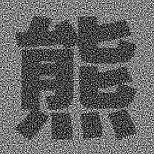
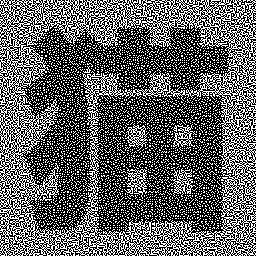

プログラミングC
第3回 演習問題
最初に
/home/course/prog1/public_html/2022/ex/ex03/より、以下のファイルをコピーしておくこと。
input1.txt, output1.txt, input2.txt, output3.txt
※bmpファイルはコピー不要である。
A問題(50点)
演習問題1
以下のプログラムは、ファイル in.txt を開き、その内容を out.txt にコピーするものである。
また、stdlib.hをインクルードしてexit()を使用して、エラー時にプログラムを強制終了するようにしている。
#include <stdio.h>
#include <stdlib.h>
int main() {
char c;
FILE *fpin, *fpout;
/*
* 読み込み専用でファイル in.txt を開く．
* ファイルオープンに失敗した場合はエラーを表示して終了する．
*/
if((fpin = fopen("in.txt", "r")) == NULL){
printf("Failed to open: in.txt\n");
exit(1);
}
/*
* 書き込み専用でファイル out.txt を開く．
* ファイルオープンに失敗した場合はエラーを表示して終了する．
* その際，上で開いた入力ファイルを忘れずに閉じる．
*/
if((fpout = fopen("out.txt", "w")) == NULL){
printf("Failed to open: out.txt\n");
fclose(fpin);
exit(2);
}
/*
* fpin を介して入力ファイルから，1文字ずつ読み込み，
* そのまま fpout を介して出力ファイルに書き込む
* 入力ファイルを最後まで読み込んだら，ループを抜ける．
*/
while(fscanf(fpin, "%c", &c) != EOF){
fprintf(fpout, "%c", c);
}
/* 開いた入出力ファイルをそれぞれ忘れずに閉じる． */
fclose(fpout);
fclose(fpin);
/* 正常終了を表す値0を返して終了する． */
return 0;
}
これを変更して、以下のようなプログラムを作成せよ。
- ファイル input1.txt を読み込み用として開く。
- output1-ans.txt を書き込み用ファイルとして開く。
- input1.txt の内容を読み込み、文字配列（ハンドアウトLec03-19, 20参照）に格納する。
- 文字配列に格納された内容について、大文字があればその文字を小文字に変換し、
それ以外の文字はそのまま output1-ans.txt に書き込む。
- 次に、改行を利用して1行空けてから、同じ文字配列の内容について、今度は小文字を大文字に変換し、
それ以外はそのまま output1-ans.txt に追加書き込みする。
- さらに、改行を利用して1行空けてから、同じ文字配列の内容について、大文字は小文字に、
小文字は大文字に変換して output1-ans.txt に追加書き込みする。
結果として、output1-ans.txt には、
大文字、小文字が異なるだけの同じ文章が 3 セット書き込まれることになる。
注意
- 入力データの文字数は 500 文字より少ないものとして文字配列のサイズを決めること。
- ファイルからの読み込みは何度も繰り返さず、1回だけ行うものとする。
- 3通りの書き込みの区切りに対して、改行を利用して1行空けて、内容を見やすくせよ（以下の output1.txt の内容を参照）。
- 大文字化、小文字化などは、自分で関数を作って使用することとするが、
過去の演習で作成した関数を修正して再利用してもよい（但し自分で作ったものに限る）。
- 入力データ末尾には改行文字がないことに注意をすること。
(提出ファイル名:
prog01.c)
input1.txt の内容
C is an imperative, procedural language in the ALGOL tradition. It has a static type system. In C, all executable code is contained within subroutines (also called "functions", though not in the sense of functional programming).
"C (programming language)" from Wikipedia (https://en.wikipedia.org/wiki/C_(programming_language)). (Access date: 2022/9/10)
output1.txt
c is an imperative, procedural language in the algol tradition. it has a static type system. in c, all executable code is contained within subroutines (also called "functions", though not in the sense of functional programming).
"c (programming language)" from wikipedia (https://en.wikipedia.org/wiki/c_(programming_language)). (access date: 2022/9/10)
C IS AN IMPERATIVE, PROCEDURAL LANGUAGE IN THE ALGOL TRADITION. IT HAS A STATIC TYPE SYSTEM. IN C, ALL EXECUTABLE CODE IS CONTAINED WITHIN SUBROUTINES (ALSO CALLED "FUNCTIONS", THOUGH NOT IN THE SENSE OF FUNCTIONAL PROGRAMMING).
"C (PROGRAMMING LANGUAGE)" FROM WIKIPEDIA (HTTPS://EN.WIKIPEDIA.ORG/WIKI/C_(PROGRAMMING_LANGUAGE)). (ACCESS DATE: 2022/9/10)
c IS AN IMPERATIVE, PROCEDURAL LANGUAGE IN THE algol TRADITION. iT HAS A STATIC TYPE SYSTEM. iN c, ALL EXECUTABLE CODE IS CONTAINED WITHIN SUBROUTINES (ALSO CALLED "FUNCTIONS", THOUGH NOT IN THE SENSE OF FUNCTIONAL PROGRAMMING).
"c (PROGRAMMING LANGUAGE)" FROM wIKIPEDIA (HTTPS://EN.WIKIPEDIA.ORG/WIKI/c_(PROGRAMMING_LANGUAGE)). (aCCESS DATE: 2022/9/10)
output1-ans.txt が指示通りになっているかを確認するために、
output1-ans.txtと、
サンプルファイル output1.txt を diff コマンドを用いて比較するとよい。
diff コマンドは2つのテキストファイルを行単位で比較し、
相違点があればその行を表示する。完全に一致していれば何も表示しない。 （下記を参照のこと）
% diff output1-ans.txt output1.txt
%
（ファイルが完全に一致した場合はこのように何も表示しない）
% diff output1-ans.txt output1.txt
8c8
< "c (PROGRAMMING LANGUAGE)" FROM wIKIPEDIA (HTTPS://EN.WIKIPEDIA.ORG/WIKI/c_(PROGRAMMING_LANGUAGE)). (aCCESS DATE: 2022/9/10
---
> "c (PROGRAMMING LANGUAGE)" FROM wIKIPEDIA (HTTPS://EN.WIKIPEDIA.ORG/WIKI/c_(PROGRAMMING_LANGUAGE)). (aCCESS DATE: 2022/9/10)
output1.txtの最後の文字 “)” がoutput1-ans.txtにはない場合、
diffコマンド実行結果冒頭の 8c8 は不一致の箇所を行番号で示している。
（コマンド diff ファイル1 ファイル2 として mcn と出力された場合、
ファイル1のm行目の内容が、ファイル2のn行目の内容に変更され、
不一致になっている事を意味する。）
B問題(50点)
演習問題2
input2.txtは1行に1つの自然数が記載された数値データである。
この数値データの中から、その最大値および最小値を発見するプログラムを作成する。作成するプログラムは、
- ファイルに格納されている数値の個数が変更されても動作する。
- 数値データをファイルから読み込むときに、最大値・最小値との比較・更新を行う。
ものとする。これを以下の手順で作成する。
- まず、読み込む数値、最大値、最小値を格納する int 型の 3 つの変数を用意する。
- 最大値および最小値の初期値は、それぞれ数値データの取りうる最小値および最大値に定める。
与えられた数値データは自然数であることが分かっているので、最大値の初期値は 0 とする。
- 最小値の初期値は int 型の最大値を表すマクロとしてヘッダファイル limits.h で定義済みの INT_MAX を用いる。
（INT_MAX を用いる際にはヘッダファイル limits.h をインクルードすること）
- ファイルから数値を1つ読み込む。これを最大値と比較し、大きければ最大値を更新する。
最小値についても同様に比較・更新を行う。
- 次の数値を読み込むことができなくなるまで 4. に戻り、処理を繰り返す。
- 発見した最大値と最小値の数値を、ファイル result2.txt に出力し、プログラムを終了する。
(提出ファイル名:
prog02.c)
input2.txt の内容
68
80
42
95
84
67
49
64
28
39
63
47
62
15
52
12
11
21
10
88
result2.txt の内容例
max = 95, min = 10
また、
input2.txtの最終行に自然数1と999を追記したファイルを読み込ませた場合に、
同じプログラムできちんと題意を満たすかどうかを確認すること。
追記した場合のinput2.txt の内容
68
80
42
(中略)
21
10
88
1
999
追記した場合のresult2.txt の内容
max = 999, min = 1
演習問題3
以下のプログラムは、ファイル in.txt を開き、
すべての文字を一旦バッファにためた後に out.txt に書き出すものである。
このプログラムでは、入出力のファイル名 in.txt と
out.txt をそれぞれ文字配列 in_filename[] と out_filename[] に格納している。
第3回での講義範囲内では、文字配列の各要素を一つづつ指定することで初期化を行なっているが、
実際にはプログラム中のコメントにある通り、
次回の講義で紹介するLec04-13,14,15で示すように、文字の並び（文字列）で一度に初期化することができる。
このプログラムではこの方法を先取りする形で用いている。
#include <stdio.h>
#include <stdlib.h>
/* 文字列バッファのサイズ */
#define MAX 1000
int main(){
char in_filename[] = "in.txt";
char out_filename[] = "out.txt";
FILE *fpin, *fpout;
char buf[MAX]; /* 文字列バッファ */
int c; /* ファイルからの1文字取得用バッファ */
int n; /* 読み込んだ文字数 */
int i;
/* 入力ファイルを開く */
if((fpin = fopen(in_filename, "r")) == NULL){
printf("Failed to open: %s\n", in_filename);
exit(1);
}
/* 出力ファイルを開く */
if((fpout = fopen(out_filename, "w")) == NULL){
printf("Failed to open: %s\n", out_filename);
fclose(fpin);
exit(2);
}
/* バッファの最大数までデータを読み込む */
for(n = 0; n < MAX; n++){
if((c = fgetc(fpin)) == EOF)
break;
buf[n] = (char)c; /* char へのキャストを忘れない */
}
/*
* バッファが最大数まで到達してもなおEOFにならない場合，
* バッファあふれとしてエラー処理する．
*/
if(n == MAX){
printf("Buffer overflow !\n");
exit(3);
}
/* バッファの内容を出力する */
for(i = 0; i < n; i++){
fputc(buf[i], fpout);
}
/* 開いた入出力ファイルをそれぞれ忘れずに閉じる */
fclose(fpout);
fclose(fpin);
return 0;
}
- このプログラムを修正し、ファイル input1.txt から読み込んだ文字列を逆順にして
output3-ans.txt に書き出すようにせよ。
(提出ファイル名: prog03a.c)
- 解答例 (output3.txt) と自分の作成した出力結果 (output3-ans.txt) をプログラム中で開き、
先頭から 1 文字ずつ比較して、2つのファイルの内容が一致するかどうかを調べて結果を表示するプログラムを作成せよ。
一致していない場合、先頭から何文字目で違っているかを出力すること（詳細は下記の実行例を参照）。
(提出ファイル名: prog03b.c)
output3.txt の内容
)01/9/2202 :etad sseccA( .))egaugnal_gnimmargorp(_C/ikiw/gro.aidepikiw.ne//:sptth( aidepikiW morf ")egaugnal gnimmargorp( C"
.)gnimmargorp lanoitcnuf fo esnes eht ni ton hguoht ,"snoitcnuf" dellac osla( senituorbus nihtiw deniatnoc si edoc elbatucexe lla ,C nI .metsys epyt citats a sah tI .noitidart LOGLA eht ni egaugnal larudecorp ,evitarepmi na si C
prog03b.cでの実行例（prog03a.cが正しく動作している場合）
% ./a.out
Two files are identical.
（output3.txtとoutput3-ans.txtが一致した場合）
prog03a.cが正しく動作していると、ファイル不一致の場合の動作確認ができないので、
あえて不一致がわかっているファイル（例えば、output3.txtとinput1.txt)との比較も試すこと。
output3.txtとinput1.txtとの比較を行う場合、1文字目から違うため、以下の結果となる。
% ./a.out
Two files are different at 1 byte.
（ファイル不一致の場合は、どこで相違が見つかったのかを表示する。
output3.txtとinput1.txtとの比較では、
1バイト目（1文字=1バイトなので、1文字目に相当）で相違が見つかった。）
Extra問題
/home/course/prog1/public_html/2022/ex/ex03/extra/ より、以下のファイルをコピーしておくこと。
vss_*.pbm（演習問題4）、data05-*.txt（演習問題5） （bmpファイルを使用しないことに注意すること。）
(全ファイルをzipでまとめたものを、Zipファイルとして用意したので、必要であればここからダウンロードできる。)
演習問題４
複数の同じサイズの白黒画像を重ね合わせてできる画像を出力するプログラムを作成する。
ここで、画像の重ね合わせとは、白黒画像を透明なシートに印刷し、
位置を合わせてそれらを重ね合わせた時にできる画像と同様のものと考えることとする。
したがって、重ね合わせてできる画像の各画素値は、重ね合わせる画像の同じ位置の画素値が全て白であれば白、
それ以外（一つでもその位置の画素値が黒の画像がある場合）は黒となる。
以下の仕様を満たすように関数 read, write, superpose の中身を埋めて、プログラムを完成させなさい。
ただし、扱う画像ファイルのフォーマットはすべて Plain PBM（プログラミング入門第10回ハンドアウト参照）とする。
「関数 read の仕様」
- 引数なし、戻り値は int 型。
- ファイル名（文字列）を scanf を用いて入力する（次回ハンドアウト参照）。
- 戻り値は scanf の戻り値とする。これが EOF の場合は、以下を実行せずに直ちに EOF を返す。
- 入力されたファイル名の Plain PBM 形式画像ファイルを読み込み、
その幅、高さ、画素値をそれぞれ外部変数 w, h, i_img に格納する。
「関数 write の仕様」
- 引数なし、戻り値なし。
- 外部変数 w(幅), h(高さ), o_img(画素値) で与えられる画像を、
Plain PBM 形式でファイル out.pbm に書き出す。
「関数 superpose の仕様」
- 引数なし、戻り値なし。
- 画像ファイルを read 関数を用いて読み込み、その幅と高さを表示する。
- 読み込んだ画像のサイズがこれまでに読み込んだ画像のサイズと異なる場合は、
エラーメッセージを表示して強制終了する。
- 読み込んだ画像の画素値（外部変数 i_img の要素）を調べ、
重ね合わせてできる画像の画素値（外部変数 o_img の要素）を更新する。
- 画像ファイルの読み込みは、無限ループを用いて read 関数が EOF を返すまで
（すなわち、read 関数内で Control-D が入力されるまで）繰り返す。
(提出ファイル名:
prog04.c)
補足）視覚復号型秘密分散法と呼ばれる暗号技術は、画像を複数の画像（分散画像）に分けて暗号化するものである。
この演習問題で扱っている画像の重ね合わせは、この方法で暗号化された情報の復号演算（暗号化された情報を復元して取り出す処理）に相当している。
実行例で使用しているサンプル画像ファイル vss_*.pbm は、視覚復号型秘密分散法で作成された分散画像になっているので、
このプログラムによって秘密画像が復元できることになる。
#include <stdio.h>
#include <stdlib.h>
#define MAX_W 256 /* 画像の幅の最大 */
#define MAX_H 256 /* 画像の高さの最大 */
#define BUF 256 /* バッファサイズ */
/* 画像の幅，高さ，画素値を格納する外部変数 */
int w, h, i_img[MAX_W * MAX_H], o_img[MAX_W * MAX_H];
int read();
void write();
void superpose();
int main(){
superpose();
write();
return 0;
}
/*
* 入力されたファイル名の Plain PBM 形式画像ファイルを読み込み，
* その幅，高さ，画素値をそれぞれ外部変数 w, h, i_img に格納する
*/
int read(){
FILE *fp;
char filename[BUF];
int r;
/* 必要に応じて変数宣言を追加 */
printf("ファイル名を入力してください: ");
if((r = scanf("%s", filename)) == EOF)
return EOF;
if((fp = fopen(filename, "r")) == NULL){
fprintf(stderr, "ファイル %s を開けません！\n", filename);
exit(1);
}
/* 仕様にしたがって関数を作成しなさい */
}
/*
* 外部変数 w(幅)，h(高さ)，o_img(画素値) で与えられる画像を，
* Plain PBM 形式でファイル out.pbm に書き出す
*/
void write(){
/* 仕様にしたがって関数を作成しなさい */
}
/*
* 画像ファイルを read 関数を用いて読み込み，
* それらを重ね合わせてできる画像の画素値を
* 外部変数 o_img に格納する
*/
void superpose(){
/* 仕様にしたがって関数を作成しなさい */
}
用意した画像は以下の通り
注意: displayコマンドによる画像の表示は、以下の環境で行ってください。
1. 演習室環境
2. VPNによる仮想ネットワーク接続を経由した、VNCによるGUIでのリモートログイン環境
% display vss_panda_1.pbm

% display vss_panda_2.pbm

% display vss_eye_1.pbm
% display vss_eye_2.pbm
実行例
% ./a.out
ファイル名を入力してください: vss_panda_1.pbm
width = 256, height = 256
ファイル名を入力してください: vss_panda_2.pbm
width = 256, height = 256
ファイル名を入力してください: ^D(これは Ctrl-D を意味する)
% display out.pbm
 % ./a.out
ファイル名を入力してください: vss_eye_1.pbm
width = 256, height = 128
ファイル名を入力してください: vss_eye_2.pbm
width = 256, height = 128
ファイル名を入力してください: ^D
% display out.pbm
%
% ./a.out
ファイル名を入力してください: vss_eye_1.pbm
width = 256, height = 128
ファイル名を入力してください: vss_eye_2.pbm
width = 256, height = 128
ファイル名を入力してください: ^D
% display out.pbm
%
演習問題５
昇順（小さい順）に並んだ複数の数値（int型に格納可能とする）が入っているファイルが 2 つある。
この 2 つのファイルに入っている数値をすべてまとめて全体を昇順で標準出力するプログラムを作成せよ。
2つのファイルそれぞれに値がいくつ入っているかわからない。また、重複する数値は重複した回数分出力すること。
2つのファイルのファイル名は、コマンド名の後に与えることとする。
% ./a.out data05-1.txt data05-2.txt
この実行例のように、コマンドラインオプションでファイル名などを読み込む方法は、
今後第６回で学ぶ（Lec06-11, -12, -13を見よ）ので参照すること。
以下に例を示す。これを元に解答を作成してもよい。
#include <stdio.h>
#include <stdlib.h>
int main(int argc, char** argv){
FILE *fpin1, *fpin2;
/* 入力ファイルその１を開く */
if ((fpin1 = fopen(argv[1], "r")) == NULL){
printf("Failed to open: %s\n", argv[1]);
exit(1);
}
/* 入力ファイルその２を開く */
if ((fpin2 = fopen(argv[2], "r")) == NULL){
printf("Failed to open: %s\n", argv[2]);
fclose(fpin1);
exit(2);
}
/*
* 数値の読み込みと処理，および結果を出力する
*/
/* 開いた入力ファイルをそれぞれ忘れずに閉じて終了する */
fclose(fpin1);
fclose(fpin2);
return 0;
}
実行例
% ./a.out data05-1.txt data05-2.txt
-25
-24
-23
-22
-22
-22
-21
-21
-21
-19
-19
-18
-18
-18
-17
-14
-14
-13
-13
-12
-12
-11
-10
-9
-8
-8
-8
-7
-6
-5
-4
-3
-3
0
2
4
4
5
6
6
6
6
6
8
10
12
14
14
15
15
17
17
18
19
19
19
20
23
23
24
%
プログラムのテストは data05-1.txt、data05-2.txt、
data05-3.txt を組み合せて行うこと。組合せは 3 通りある。
(提出ファイル名:
prog05.c )
解答の一例
- 2つのファイルは昇順に並んでいるので、まず、両方のファイルから一つずつ数字を読み込む。
- 読み込んだ2つの数字の小さいほうを出力するとともに、
出力した数字を持っていたファイルからもう一つ数字を読み込む。
ただし、両者の数値が一致した場合はどちらの数値から出力してもよい。
- ステップ 2 を繰り返すと、ファイルの終端に到達したときに数値を読むことができなくなる。
fscanfは読み込めない場合にEOFを返すので、このことを利用して、残ったファイルからの読み込みと出力を続行する。
- 両方のファイルの終端に到達したときが処理の終了を表す。
結果の確認の方法について
出力結果は大きくなるので、リダイレクトを用いると、結果を確認しやすい。
./a.out data05-1.txt data05-2.txt > data05.out
この例ではファイル「data05.out」に結果が出力される。
Unixコマンドで、作成するプログラムと同じ結果を得るためには、
cat data05-1.txt data05-2.txt | sort -n > cmdresult.out
とするとファイル「cmdresult.out」に結果が入る。
この結果と自分の結果を演習問題1で紹介した diff コマンドを用いて確認せよ。
diff data05.out cmdresult.out